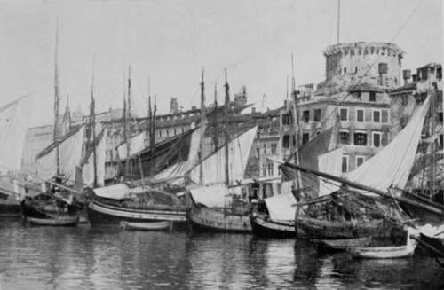

III. The Journey Out To Bosnia And Montenegro
Description
This section is from the book "Bird-Hunting Through Wild Europe", by R. B. Lodge. Also available from Amazon: Bird-Hunting Through Wild Europe.
III. The Journey Out To Bosnia And Montenegro
Early in April 1906, I found myself in Serajevo, a place the very existence of which, let alone its whereabouts, I had been profoundly ignorant a few weeks before. It is possible that some of my readers will sympathize with this ignorance, for, though the capital of Bosnia, it is not a place which makes much stir in the world, and it would be easy to go through life and never hear of it or see any reference to it.
The railway journey from Vienna and Budapest had been through a desolate, snow-covered country, and on arrival early in the morning at my destination the snow was still falling heavily, and the mountains which encircle the town gleamed white through the morning mist as a rickety omnibus bumped along the stone-cobbled streets and deposited me at the door of the Hotel de l'Europe.
The object of my visit was to interview the naturalists at the National Museum, to whom I had introductions, in order to glean some information as to the nesting-places of the Dalmatian Pelican (Pelecanus crispus). I had come out with the intention of rinding, and photographing if possible, this Pelican, and also the other European Pelican, P. onocrotalus, as well as the rare and beautiful Great White Heron (Ardea alba).
I suppose that, comparatively speaking, few of those who see the Pelicans solemnly sitting round their small pond in the gardens of the Zoological Society have any idea that these great birds, so curious in their structure and appearance, are still inhabitants of Europe in this twentieth century. We think of them almost instinctively as the 1 Pelican of the wilderness,' and associate with them the idea of vast African lakes and the fever-laden banks of remote tropical rivers, where the crocodiles crawl among the mangrove stems, and stretch their scaly bodies along the steaming mud-banks.
Needless to say, they are only to be found in the most out-of-the-way parts of Wild Europe, far from the haunts of man, and very far from any remnants of civilization. This I was, of course, prepared for, but the reality far exceeded my anticipations ; and before I succeeded in photographing these birds at home I was fated to spend a whole month in the search, my travels being extended considerably farther than I had expected.
Yet this can hardly be considered a disadvantage.
Travelling in itself is pleasant enough; travelling for any specified object adds enormously to the interest. And the search after rare birds is a most fascinating pursuit, inasmuch as it leads one of necessity into the most out-of-the-way and therefore the most interesting places, where the scenery is of the finest, and where the people, if there are any at all, are genuine representatives of their country, unspoilt by the life of cities and by contact with the ubiquitous tourist. The very difficulty of the pursuit adds to the enjoyment of success ; and if there is a suspicion of danger attached to the work it gives fresh zest to the whole.
At Serajevo one feels on the threshold of Eastern Europe, and of another world ; a world of strange costumes and baggy breeches, and of Oriental ways and customs, far removed from the frock-coated, top-hatted world of the rest of Europe. And yet we are still only in Austria-Austria, that is, to all intents and purposes. For the Treaty of Berlin, which played the game of General Post thirty years ago in this part of Europe, gave the administration of Bosnia, Dalmatia, and Herzegovina into the care of Austria, and this country now practicallygoverns them as if they were her own. She has certainly spent much money on railways and more on fortifications, and her soldiers (in blue tights) are everywhere present. There are banks, public buildings, and a museum at Serajevo, and one hears much of the prosperity of the country under Austrian rule. It may be so, but whether the prosperity is for the Austrian officials or for the inhabitants of the country I know not. All I can say is, that never in my life have I seen such depressed-looking, hopeless, poverty-stricken people as I saw coming into the town on market-day, driving sheep not much bigger than terriers and ponies the size of a Newfoundland dog. Clad in rags and tatters, and bearing in front a leather band like a shelf-which looks as if originally intended to carry a battery of weapons1-they slouch along, with their feet wrapped up in shapeless bundles of rags, exactly like the bears in the Zoo. Very different is their bearing from that of the free and independent Montenegrins, or the warlike Albanians.
Spalato Orange-Boats
The mountains in the immediate neighbourhood of the town are still inhabited by bears and wolves ; and I heard that not only the great Eagle Owl (Bubo maximus), but also the rare Ural Owl (Syrnium tiralensis) is to be found there. The abundance of Jackdaws and Hooded Crows in the streets is very noticeable, and I found them equally numerous everywhere throughout the Balkans. At first it seemed strange to find these birds-which I had always been accustomed to regard as northern birds -down here so far south, and to see how tame and familiar they are compared with the wariness and caution they display in England. Here in the streets, and on a piece of waste ground outside the town used as a rubbish heap, it was quite easy to walk within a few yards of them. On this same waste ground were many Wheatears and flocks of Tree Sparrows, while along the river-banks were White and Yellow Wagtails and Sandpipers. A few Sandmartins were skimming over the river on April 4.
1 Carrying arms is now prohibited, and the custom has been stamped out after some hundreds have been hung for carrying alone, but they still cling to the now useless belt.
The museum has some good birds and mammals, a group of Brown Bears killed in the mountains about an hour's journey from the town being excellent. But the rooms are too small for large groups to be displayed to advantage.
Continue to:
- prev: Birds'-Nesting In Spain. Part 10
- Table of Contents
- next: The Journey Out To Bosnia And Montenegro. Continued